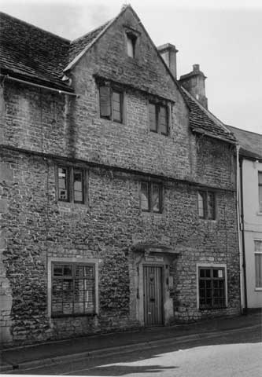

Type of building:
Mid mixed terrace
Listing:
Grade ll
Plan and elevation:
Single pile, two unit, double fronted, two storeys plus high attic storey and
loft above. Plus extensions.
Summary of the probable main building
history:
Mid to late 17th Century with a late 18th or early 19th Century extension and
other mid 20th Century extensions.

North (front) elevation
Exterior:
North (front) elevation - coursed rubble with dressed quoins. Steeply gabled in
the Cotswold style. Three windows at first floor windows, all two-light with ogee
and chamfer moulded surrounds and mullions under a continuous drip label. Two
windows in gable (attic level), both two-light again with ogee and chamfer surrounds
and mullions and under a drip label. All these windows show evidence of former
external shutters and iron casements. Now fitted with modern wood casements. First
floor windows not equally spaced on facade relative to attic level windows. Additional
window in the apex of the gable (loft light) with ogee- chamfer surrounds and
under a drip label. At ground floor level, two late 20th Century hardwood windows
(replacing former shop windows - and a former shop door). Almost central modern
door fitted into chamfered stone surround. Flat stone hood over supported on scrolled
ogee moulded stone brackets. Stone tiled pitched roof with coped raised verges
and two ashlar chimney stacks at the gable ends.
South (rear) elevation - ground floor level masked by modern extensions, otherwise almost a mirror image of front elevation except first floor windows under individual straight drip labels.
Interior:
Extensively modernised but dateable features remain. Room to the left of the principal
entry (former Hall?) contains a large stone fireplace - depressed four-centred
arch with chamfered and stopped surround. The door opening into the new extension
is of dressed ogee-moulded stone and appears to be the former rear entry. Room
to the right of the principal entry (former Parlour?) also contains a stone fire
opening - smaller and with beaded edges and an ogee moulded lintel. There is a
similar fireplace in a first floor room. Another first floor room contains a small
stone round arched fireplace with a beaded edge and fitted with a small hob grate.
Walls in this area of the house are generally about 53cm thick. At the end of
the passage there is a modern rebuilt staircase, which is a much modified semi-circular
newel staircase. The loft area is lit by the front and rear apex windows. The
roof is of purlin and rafter structure with bracings and both wood pegged and
iron nailed (the latter securing what appears to be bracing added at a later date).
There is a diagonally set ridge piece with yokes. A single storey extension off
the parlour is under a cat-slide roof and contains a plain stone fireplace surround
fitted with a small late 18th Century or early 19th Century open range.
Date & development:
The former single pile two unit plan, mullion windows of ogee-chamfer section,
steep gables, roof structure, wall thickness and surviving internal features (notably
the Hall and Parlour fireplaces) point to an original mid to late 17th Century
construction date. One single room, single storey out-shut was added probably
in the late 18th Century or early 19th Century. The other single storey flat roof
extensions are of mid 20th Century date.
Ownership/occupation:
A notable property; detached when built and of three storeys, the house was constructed
by a person of wealth - "a likely guess is that one of the clothiers built
it" (Dobbie p.90). Since then, the house has variously been divided into
two (with two staircases - information from the owner), used as a shop (with shop
windows and an additional inserted door - see the Irvine drawing of 1868 and the
Coard drawing of 1969) and again as a single private residence as at present.
References and bibliography:
- An English Rural Community B.M. Willmott Dobbie Bath University Press 1969
- The Irvine drawings Bath Public Library
- Peter Coard - An English Rural Community
- Bath & County Graphic - Bath Reference Library
Reference Pictures
| South
(rear) elevation to reflect the front |
A
depressed four-centred arched fireplace of the second half of the
17th century |
Survey Drawings
| Ground
Plan |
Section |
Images from the archives
| The
property with greengrocers shop frontage about 1890 - Doreen
Holloway in doorway. |
1969
- the property with two entrances. |